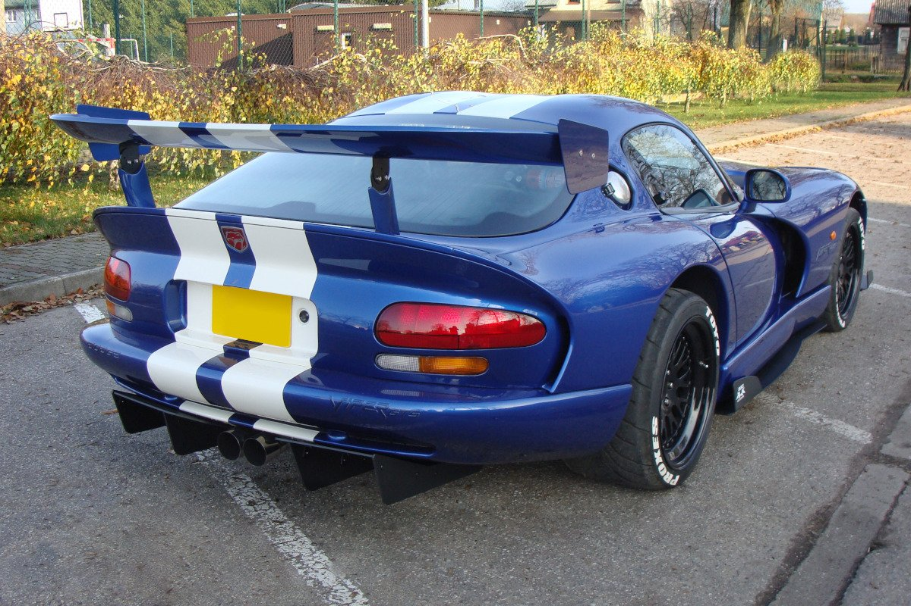
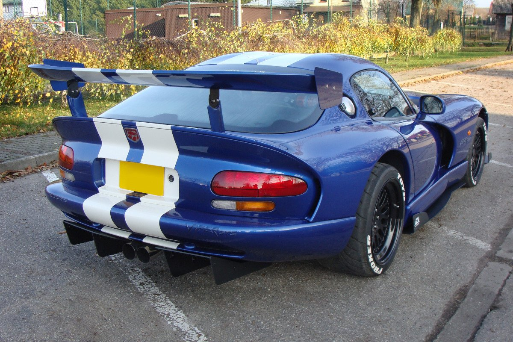
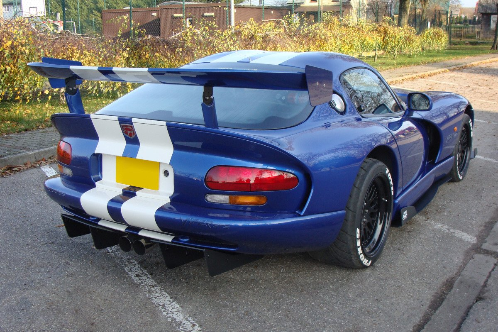

Dodge Viper – samochód sportowy klasy średniej produkowany pod amerykańską marką Dodge w latach 1991 – 2017.
Najlepsze auto świata!?
Dodge Viper to przykład tego, że wizja muscle carów mogła przez lata ewoluować. W 1991 roku rozpoczęto produkcję pierwszej generacji tego modelu, która nie była wyposażona w silnik V8, a w jednostkę V10 o pojemności aż 8,0 litra. Tylny napęd i ręczna skrzynia biegów sprawiły, że nie każdy mógł jezdzić tym autem i stał sie on wyznacznikiem tego kto potrafi naprawde dobrze jezdzić.
Pierwsza generacja
Dodge Viper I został zaprezentowany po raz pierwszy w 1991 roku. Pod koniec lat 80. XX wieku koncern Chrysler rozpoczął prace nad nowym samochodem sportowym marki Dodge, którego premiera odbyła się w 1991 roku[1]. Efektem był model Viper z awangardowym projektem nadwozia autorstwa Toma Gale'a. Charakterystycznymi elementami stałą się aerodynamiczna sylwetka, z wysoko osadzonymi reflektorami w owalnopodobnym kształcie i podobnie uformowane tylne lampy. Ponadto samochód zyskał duże wloty powietrza na krawędzi przednich błotników, a także długą maskę i nisko osadzoną kabiną pasażerską. Auto zyskało szerokie grono fanów oraz wystąpiło w serii filmów "Szybcy i Wściekli".

Ostatnia generacja
Dodge Viper III został zaprezentowany po raz pierwszy w 2012 roku. Samochód zachował ewolucyjne zmiany w stylistyce i sylwetce, a zarazem jest lżejszy niż poprzednik. Przez pierwszy rok produkcji, samochód był oferowany pod wydzieloną, nowo powstałą marką jako SRT Viper, jednak jesienią 2014 roku zrezygnowano z tego rozwiązania i samochód ponownie stał się Dodge'm Viperem. Samochód napędza ogromny silnik V10 o pojemności 8,4 l i mocy 640 KM. Co najsmutniejsze dla prawdziwych fanatyków tego auta to to, że nie doczeka sie ono następcy, gdyż sama firma ogłosiła że nie ma w planach kontynuowania produkcji tego modelu.
 
